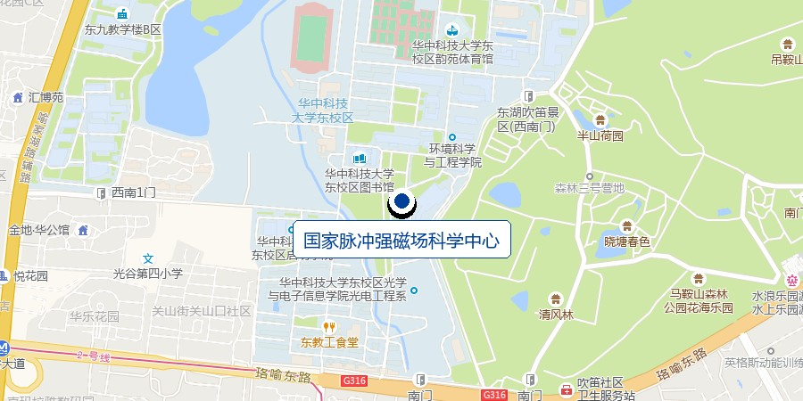

We are looking for bachelor's, master's and PhD students and postdocs with a strong background in semiconductor materials, devices, physics or fabrication to join our group. Please send your CV to xfli@hust.edu.cn.
Research areas we are recruiting for
- Emerging semiconductor materials and device physics
- Quantum transport in low-dimensional materials
- Ferroelectric and oxide thin-film electronics
- Heterogeneous integration and computing hardware
Contact
Wuhan National High Magnetic Field Center
School of Integrated Circuits
Huazhong University of Science and Technology
1037 Luoyu Road, Hongshan District, Wuhan 430074, China
xfli@hust.edu.cn
By metro
Line 2 to Jiayuan Road Station (佳园路站), then walk about ten minutes to the East Campus gate. The center is inside the campus, a few minutes further on.
Campus access
The center sits inside the HUST East Campus. Visitors and vehicles need to be registered at the gate, so write to us a day ahead and we will arrange entry and meet you.
